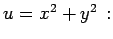
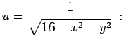
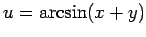
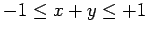
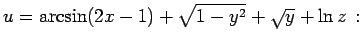
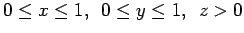

Inhalt Index DeskTop Bronstein

 Funktionen und ihre Darstellung Funktionen von mehreren Veränderlichen Verschiedene ebene Definitionsbereiche
Funktionen und ihre Darstellung Funktionen von mehreren Veränderlichen Verschiedene ebene Definitionsbereiche


In der Analysis werden meistens Funktionen betrachtet, die mit Hilfe von Formeln definiert sind. Dabei werden alle die Wertesysteme der unabhängigen Variablen in den Definitionsbereich einbezogen, für die der analytische Ausdruck der Funktion Sinn hat, d.h. für die er eindeutig bestimmte endliche und reelle Werte annimmt.
| Beispiel A |
|
 Der Definitionsbereich ist die gesamte Ebene. |
| Beispiel B |
|
 Den Definitionsbereich bilden alle Wertesysteme x,y, die die Ungleichung x2+y2<16 erfüllen. Geometrisch betrachtet stellt dieser Definitionsbereich das in der folgenden Abbildung dargestellte offene Gebiet im Innern eines Kreises dar. |
| Beispiel C |
|
: Den Definitionsbereich bilden alle Wertesysteme x,y, die die Ungleichung  erfüllen, d.h., der Definitionsbereich ist ein abgeschlossenes Gebiet, das aus einem Streifen zwischen zwei parallelen Geraden besteht. |
| Beispiel D |
|
 Der Definitionsbereich besteht aus allen Wertesystemen, die die Ungleichungen  erfüllen, d.h., er besteht aus allen Punkten, die über einem Quadrat mit der Seitenlänge 1 gelegen sind. |